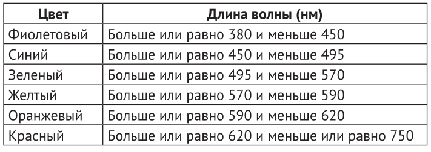

22. Длины волн видимой части спектра. (в коде есть строки из следующих тем: "словари, циклы").
Условие:
Длины волн видимой части спектра колеблются от 380 до 750 нанометров (нм). И хотя сам спектр является непрерывным, его принято делить на шесть цветов, как показано ниже:

Запросите у пользователя длину волны и выведите на экран соответствующий ей цвет. Если введенное пользователем значение длины волны окажется за пределами видимой части спектра, сообщите об этом.
Код:
table = {
"Фиолетовый": (380, 450),
"Синий": (450, 495),
"Зелёный": (495, 570),
"Желтый": (570, 590),
"Оранжевый": (590, 620),
"Красный": (620, 750)
}
value = int(input("%100s" % "Введите длину волны в диапазоне от 380 до 750 (в формате: 380): "))
# проверка входных данных
test = False
if value < 380 or value > 750:
test = False # явно записана, показывает, что переменная не изменилась
print("%99s" % "Вне диапазона.")
else:
test = True # тест пройден, значение переменной перезаписано
# поиск значения
if test:
for a, b in table.items():
if (b[0] <= value < b[-1]):
print("%99s" % "Цвет:", a)
if value == table["Красный"][-1]:
print("%99s" % "Цвет:", "Красный")